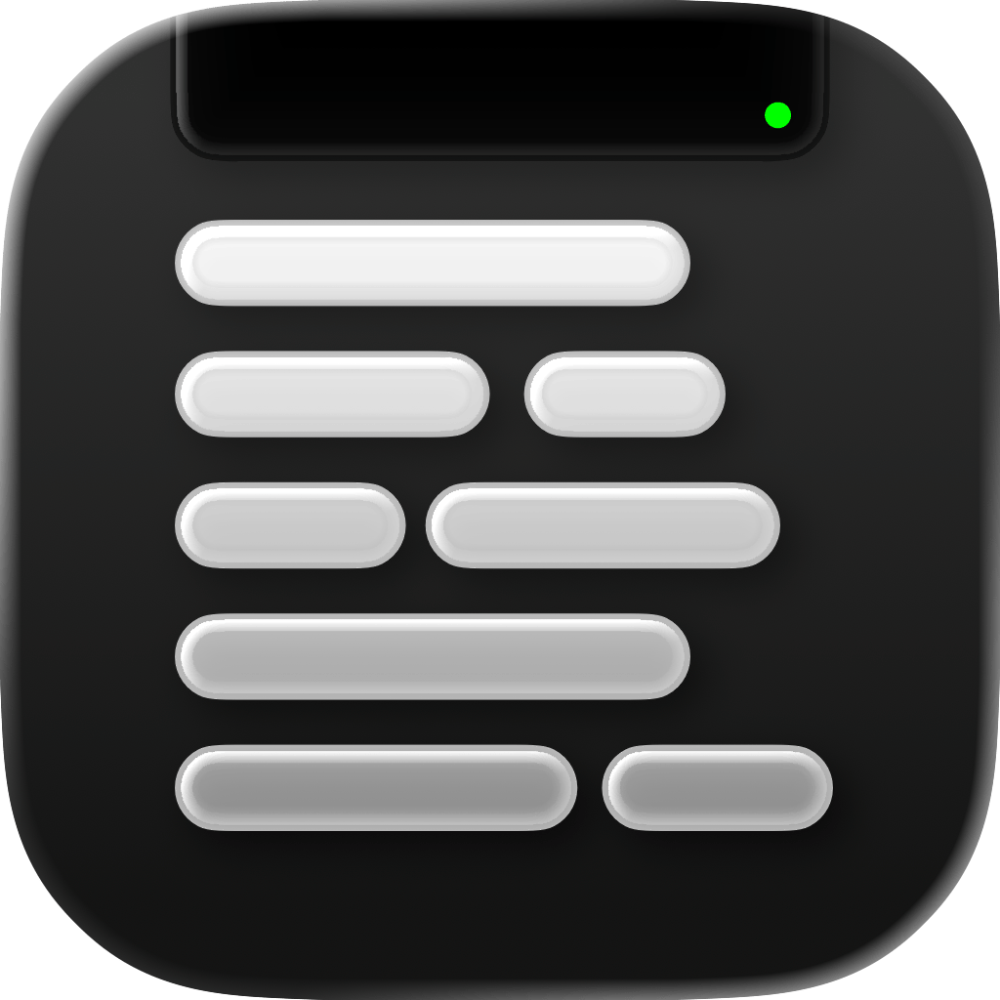
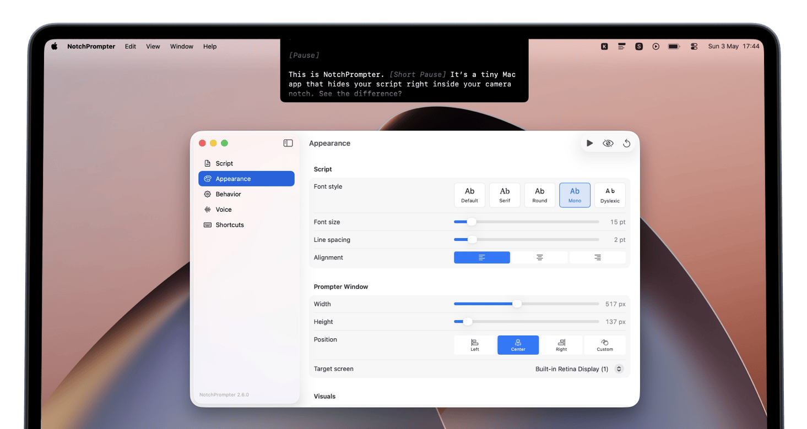

NotchPrompter
for
perfect videos
Open-source macOS prompter app that sits in your notch area completely invisible to screen recording and screen sharing.
Support the project or get it from GitHub

Features
Invisible to recording
Won't show up in screen recordings, Zoom, Meet, or any screen sharing tool.
Voice activation
Scrolls when you speak, pauses when you stop. Hands-free operation.
Fully customizable
Adjust speed, text size, and font to match your reading pace.
Multiple screens
Works with multi-monitor setups. Place your prompter on any display.
Dark mode
Switch between light and dark themes to match your environment and reduce eye strain.
One-time purchase
No subscription, no hidden fees, no data collected, open-source project.
Dyslexia-friendly font
Built-in OpenDyslexic font for easier reading. Switch anytime in settings.
Put it anywhere
Place the prompter in the notch, a corner, or as a floating window anywhere on screen.
Keyboard shortcuts
Start, stop, and control scrolling with global keyboard shortcuts.
FAQ
Does it show up in screen recordings?
What macOS version do I need?
Does it work with external monitors?
Do I need a MacBook with a notch?
Can I place the prompter anywhere on screen?
I found an incorrect translation
Can I get it for free?
How does voice-activated scrolling work?
Ready to try it?
One-time purchase. No subscription. No data collected.